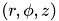
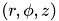

EFIT G EQDSK File
 on the rectangular grid used, q, the boundary, and the limiter contour. A right-handed cylindrical coordinate system  is used. The G EQDSK provides information on the pressure, poloidal current function, q profile on a uniform flux grid from the magnetic axis to the plasma boundary and the poloidal flux function on the rectangular computation grid. Information on the plasma boundary and the surrounding limiter contour is also provided. http://fusion.gat.com/efit/g_eqdsk.html
on the rectangular grid used, q, the boundary, and the limiter contour. A right-handed cylindrical coordinate system  is used. The G EQDSK provides information on the pressure, poloidal current function, q profile on a uniform flux grid from the magnetic axis to the plasma boundary and the poloidal flux function on the rectangular computation grid. Information on the plasma boundary and the surrounding limiter contour is also provided. http://fusion.gat.com/efit/g_eqdsk.html
- Format and Variables
character*10 case(6) dimension psirz(nw,nh),fpol(1),pres(1),ffprim(1), & pprime(1),qpsi(1),rbbbs(1),zbbbs(1),rlim(1),zlim(1) read (neqdsk,'(6a8,3i4)') (case(i),i=1,6),idum,nw,nh read (neqdsk,'(5e16.9)') rdim,zdim,rcentr,rleft,zmid read (neqdsk,'(5e16.9)') rmaxis,zmaxis,simag,sibry,bcentr read (neqdsk,'(5e16.9)') current,simag,xdum,rmaxis,xdum read (neqdsk,'(5e16.9)') zmaxis,xdum,sibry,xdum,xdum read (neqdsk,'(5e16.9)') (fpol(i),i=1,nw) read (neqdsk,'(5e16.9)') (pres(i),i=1,nw) read (neqdsk,'(5e16.9)') (ffprim(i),i=1,nw) read (neqdsk,'(5e16.9)') (pprime(i),i=1,nw) read (neqdsk,'(5e16.9)') ((psirz(i,j),i=1,nw),j=1,nh) read (neqdsk,'(5e16.9)') (qpsi(i),i=1,nw) read (neqdsk,'(2i5)' ) nbbbs,limitr read (neqdsk,'(5e16.9)') (rbbbs(i),zbbbs(i),i=1,nbbbs) read (neqdsk,'(5e16.9)') (rlim(i),zlim(i),i=1,limitr)
caseIdentification character stringnwNumber of horizontal R grid pointsnhNumber of vertical Z grid pointsrdimHorizontal dimension in meter of computational boxzdimVertical dimension in meter of computational boxrleftMinimum R in meter of rectangular computational boxzmidZ of center of computational box in meterrmaxisR of magnetic axis in meterzmaxisZ of magnetic axis in metersimagpoloidal flux at magnetic axis in Weber/radsibrypoloidal flux at the plasma boundary in Weber/radrcentrR in meter of vacuum toroidal magnetic fieldbcentrbcentrVacuum toroidal magnetic field in Tesla atrcentrcurrentPlasma current in AmperefpolPoloidal current function in m T, F = RB_t on flux gridpresPlasma pressure in nt/m^2 on uniform flux gridffprimFF'(psi) in (m T)^2/(Weber/rad) on uniform flux gridpprimeP'(psi) in (nt/m^2)/(Weber/rad) on uniform flux gridpsizrPoloidal flux in Weber/rad on the rectangular grid pointsqpsiq values on uniform flux grid from axis to boundarynbbbsNumber of boundary pointslimitrNumber of limiter pointsrbbbsR of boundary points in meterzbbbsZ of boundary points in meterrlimR of surrounding limiter contour in meterzlimZ of surrounding limiter contour in meter
J_t (Amp/m2) = R P'(psi) + FF'(psi) / R
| 13 Oct 2021 |

|
Max-Planck-Institut für Plasmaphysik |